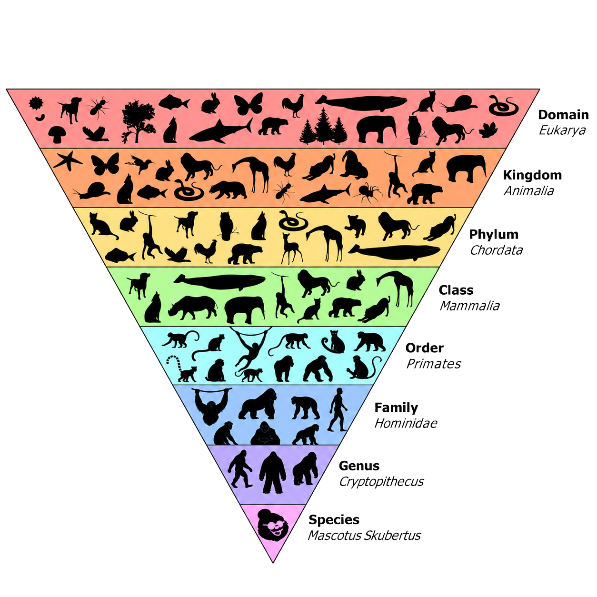

TAXONOMY DROP
How to Play
Drop a ball so it touches another of the same type.
They merge into a ball of the next type!
Species + Species → Genus
1
Aim and drop
Move your mouse to aim. Click to drop.
2
Keep merging
Match identical types to create larger types
3
Don't overflow!
If a ball spills out of the pyramid, the game ends.
Help Skubert trace his roots from the species level (Mascotus Skubertus) all the way to Eukarya!
Game Over
A sphere spilled over the edge of the pyramid and struck the bottom.
0